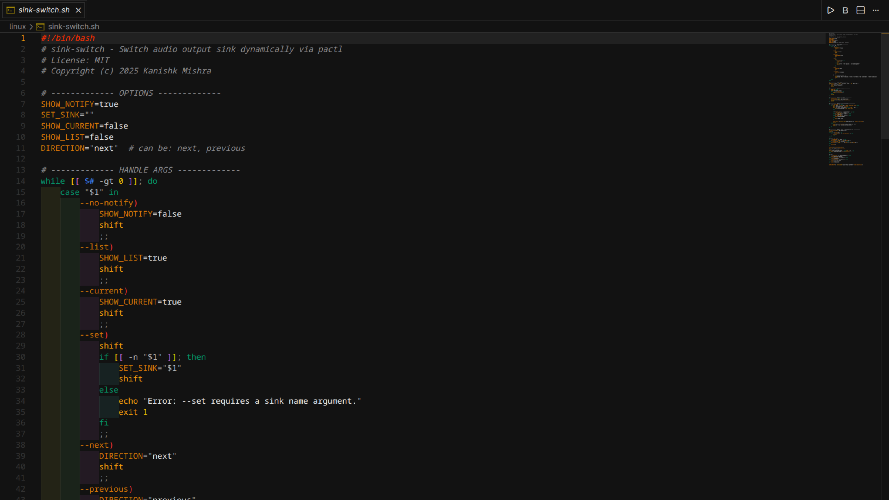
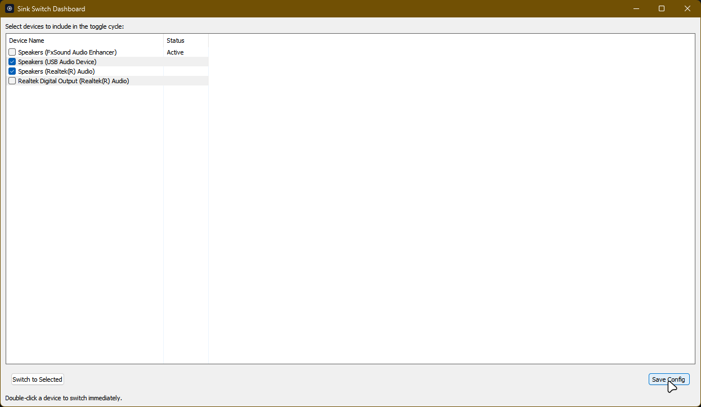
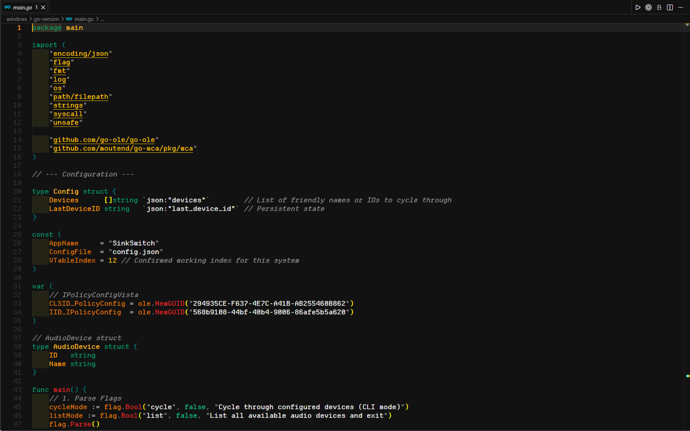

Switch audio instantly
The fastest way to switch audio output on Linux. Use hotkeys or a clean dashboard to swap between speakers and headphones in a heartbeat.

Tired of clicking through menus?
Switching audio output on Linux is usually slow, annoying, and takes too many clicks.
Too many clicks
Open settings, find sound, pick output... every single time.
Slow switching
Waiting for the system to react while your music is playing out loud.
Built for speed
Instant switching
Switch your audio sink in milliseconds without opening settings.
Dashboard UI
A minimal, clean interface to manage all your audio devices at once.
Smart Memory
Sink-Switch remembers your preferred volume for each device.
Global Hotkeys
Set custom keybindings to switch outputs from anywhere.
Three steps to freedom
Install
Grab the script or binary and put it in your path.
Set Hotkeys
Map your favorite keys to trigger the switch logic.
Switch Instantly
Tap your keys and watch the audio jump between devices.
See it in action

Dashboard view on Linux

Easy device configuration

Native Windows GUI (Go Version)
It just feels right
Once you start using hotkeys to switch your audio, you'll wonder how you ever lived without them. It becomes muscle memory.
Lightweight & Powerful
Built using shell scripts and Go for maximum performance. It interacts directly with PulseAudio, PipeWire, and Windows Core Audio APIs.
- Linux & Windows Support
- PulseAudio / PipeWire Integration
- Automation Ready
Everything you need to know
Check out our comprehensive documentation to get the most out of Sink-Switch.

Kanishk Mishra
"Built by a Linux user, for Linux users. I made this because I was tired of the small frictions in my daily workflow."
Ready to switch faster?
Join the developers and power users who have optimized their Linux audio setup.